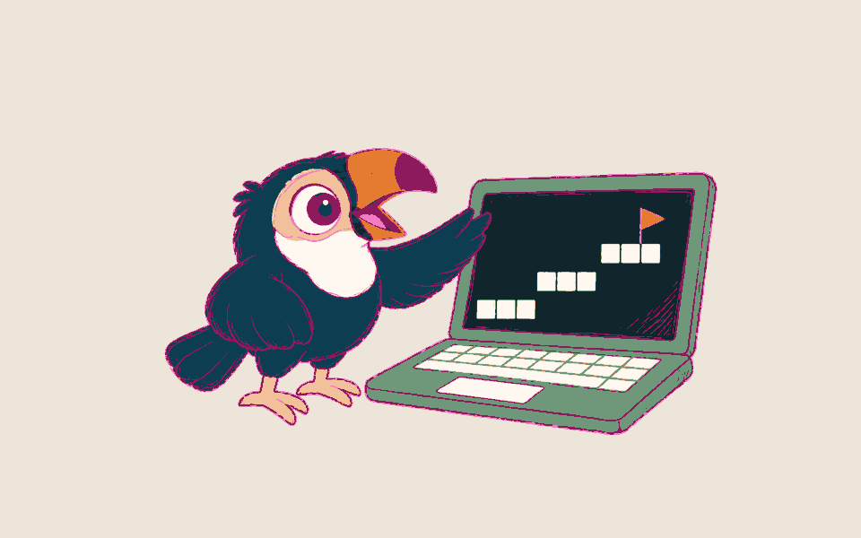

A familiar shape, adapted to you
Four simple stages, with activities and pace shaped around the learner.
Hello and the plan
A friendly start, a short plan and a choice of activities.
Catch-up
Talk about the week. Typing the answers can double as writing practice.

Skills built into their interests
Use games, websites or newspapers to practise a skill with guidance.
Review and refine
Look back at the work and choose what to practise next.
Example lesson outline · illustrative
Writing through a game
For a younger primary learner practising English.
- Goal
- Practise writing clear sentences.
- What we do in the session
- Type a catch-up, then write instructions for a game they enjoy.
- Skill practised
- Sentence building, spelling and putting ideas in order.
- Next step
- Read the instructions together and choose one sentence to refine.
Example lesson outline · illustrative
Working through an exam question
For an older student preparing for GCSE or IB exams.
- Goal
- Practise an answer that addresses the question.
- What we do in the session
- Use a worked example, try a past-paper question and review the mark scheme.
- Skill practised
- Planning an answer and applying exam technique.
- Next step
- Refine the answer and choose a question for further practice.
Example lesson outline · illustrative
English for a work qualification
For an adult working towards Functional Skills English for work.
- Goal
- Practise clear, practical writing for work.
- What we do in the session
- Read a workplace message, use a worked example and draft a reply.
- Skill practised
- Reading for meaning and choosing clear words and sentences.
- Next step
- Review the reply and choose a Functional Skills practice task.